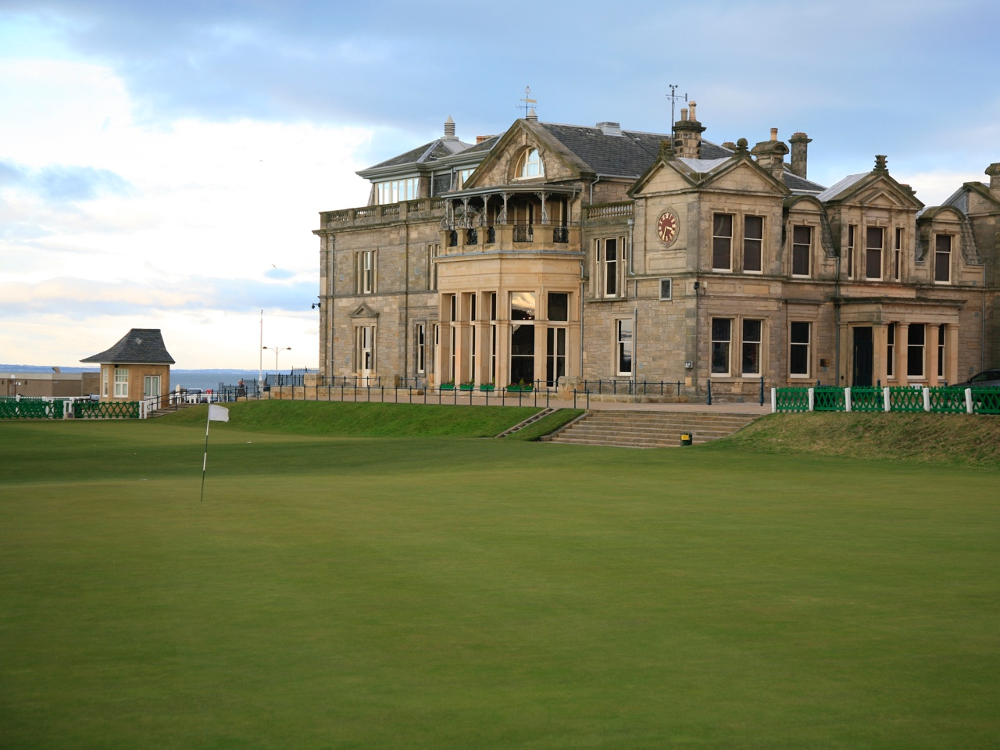
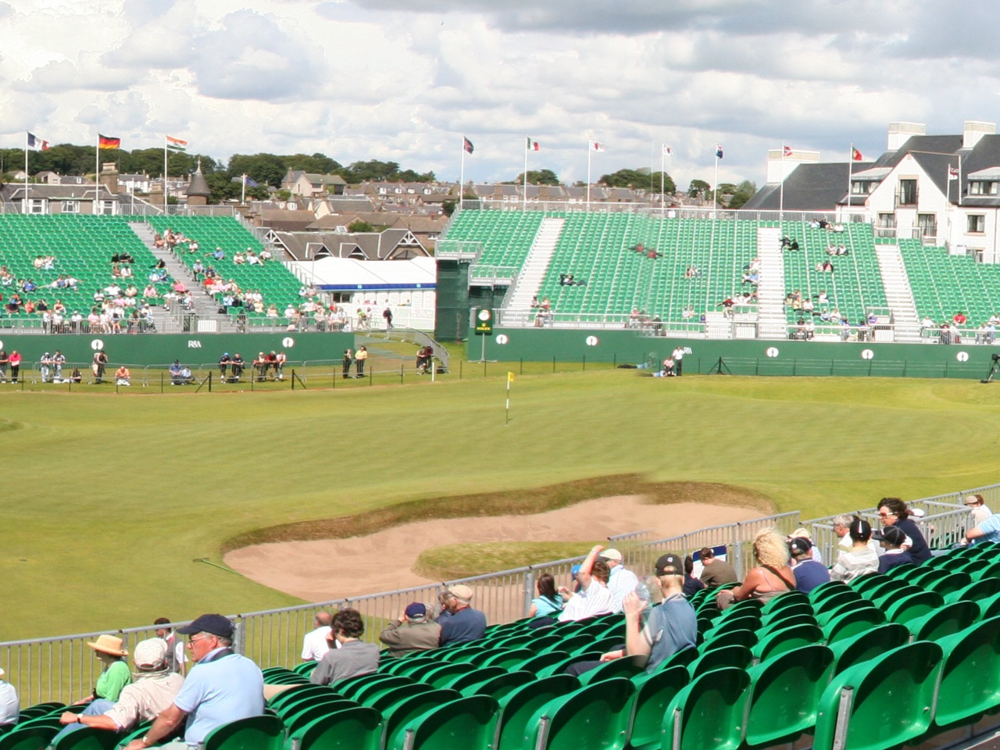

We have 28 years experience of advising our guests on reserving Tee Times both in St. Andrews and the surrounding area. Please call or email us for help or advice. We would be happy to offer information and tips on securing tee times and offer suitable itineraries for golf breaks both Winter and Summer.
View detailsGolf Packages
We have over 28 years experience of advising our guests on reserving Tee Times both in St. Andrews and the surrounding area.
We would be happy to offer information and tips on securing tee times and offer suitable itineraries for golf breaks both Winter and Summer. Please contact us for help or advice.
St Andrews Courses are only a short stroll away. We are in receipt each year of a number of tee times on the Old Course (generally offered on a 5 night stay basis and with at least Old Course and 1 other St Andrews Course and between May and August) and were the Pioneers of the Old Course inclusive packages for guests on the Winter Golf programme (Mid October to Mid-April).

The Old Course
The Old Course has a golfing pedigree and is one of the most famous golf courses in the world. It has hosted some of golf's most dramatic moments and some of the worlds greatest players have graced its turf. Located 200 yards away from our hotel, the course retains its basic original design of playing out and then back in, with many of the greens sharing holes played in different halves.

Carnoustie, Angus
http://www.carnoustiegolflinks.co.uk
Last held the Open in 2007 and the next Open will be held in 2018. It has been described as the best course in Great Britain and one of the finest in the world. After the first 15 holes, you won't be prepared for the real test of Carnoustie - the toughest finish in championship golf.
Our other favourite Links Courses
- Kingsbarns - www.kingsbarns.com
- Crail and others - www.linkswithhistory.com
- Elie - www.golfhouseclub.co.uk